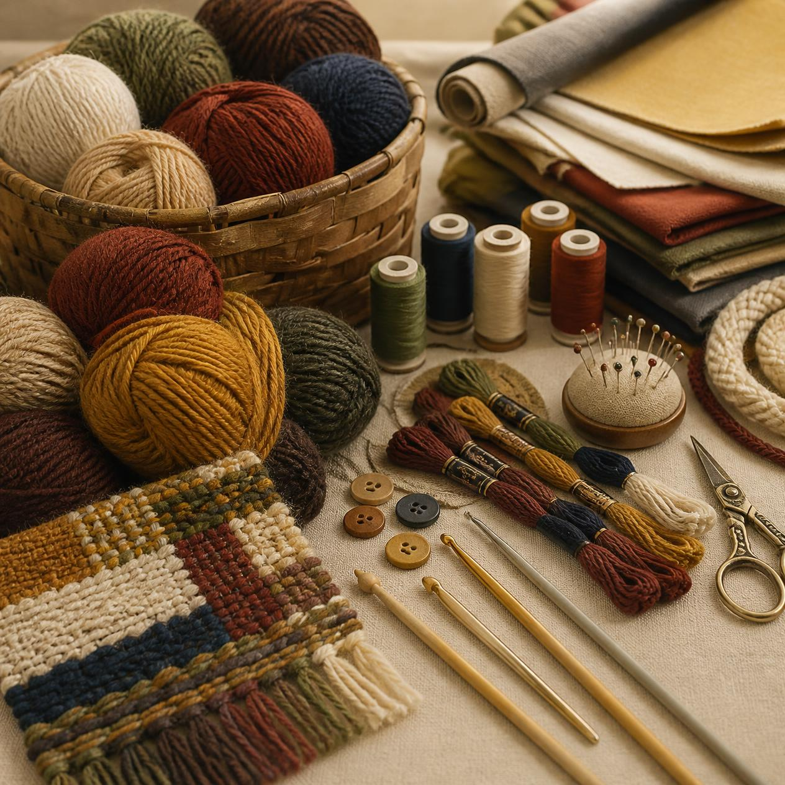
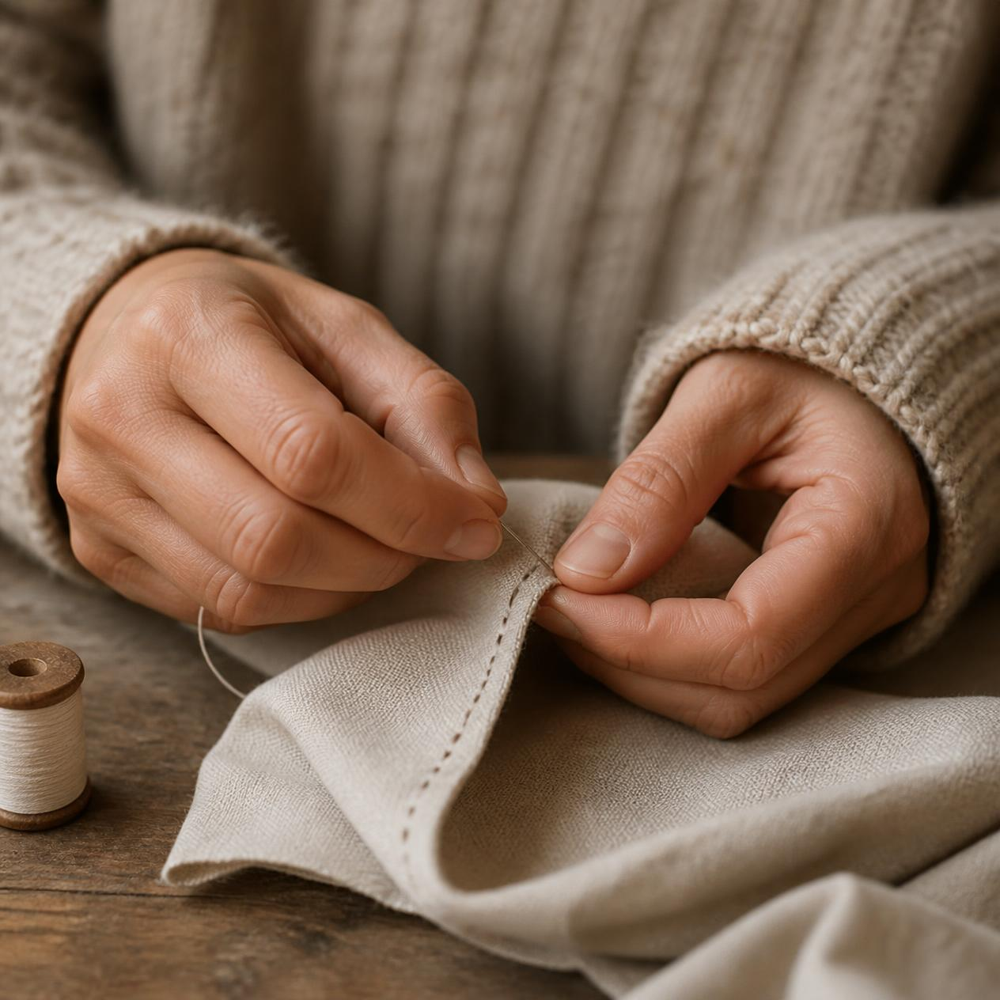
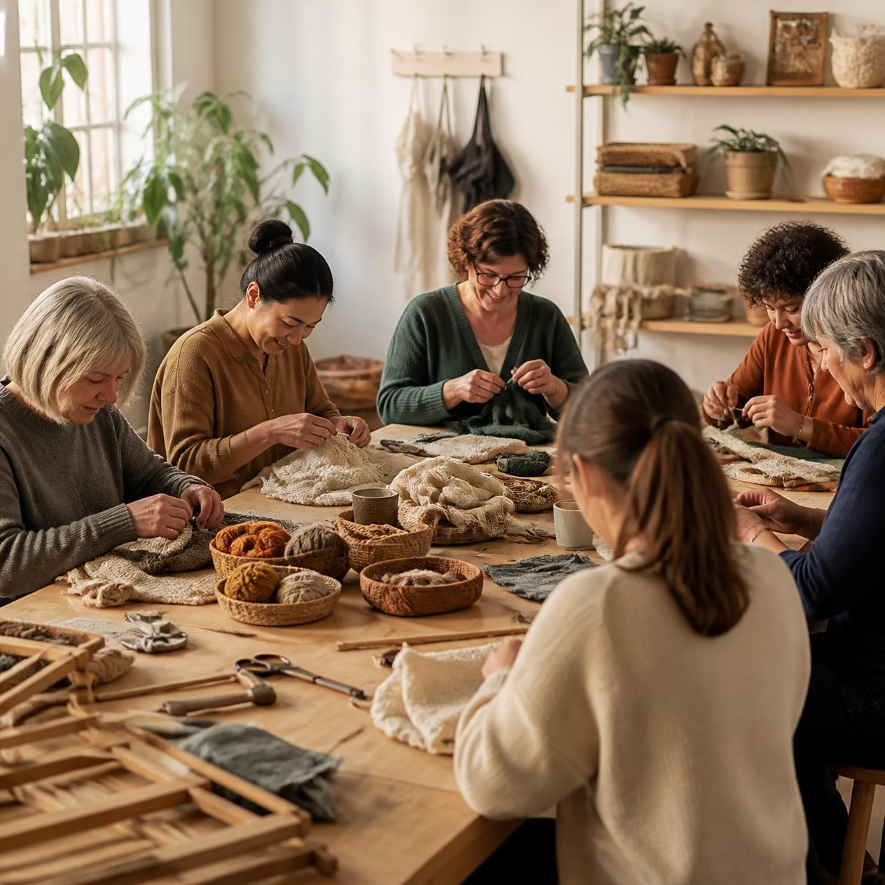
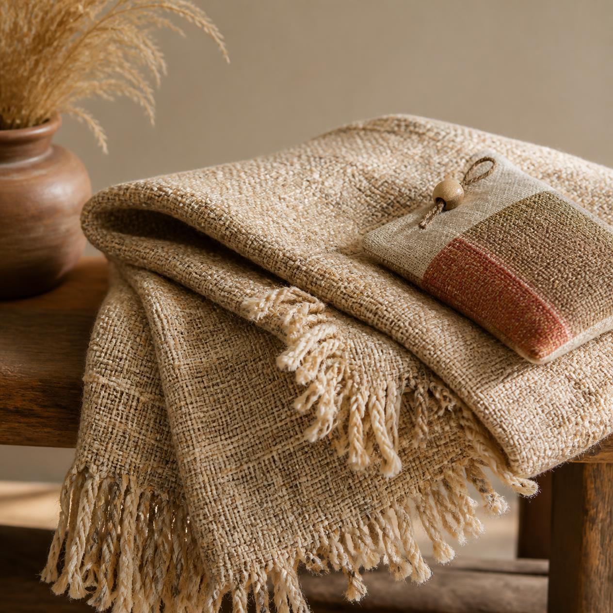
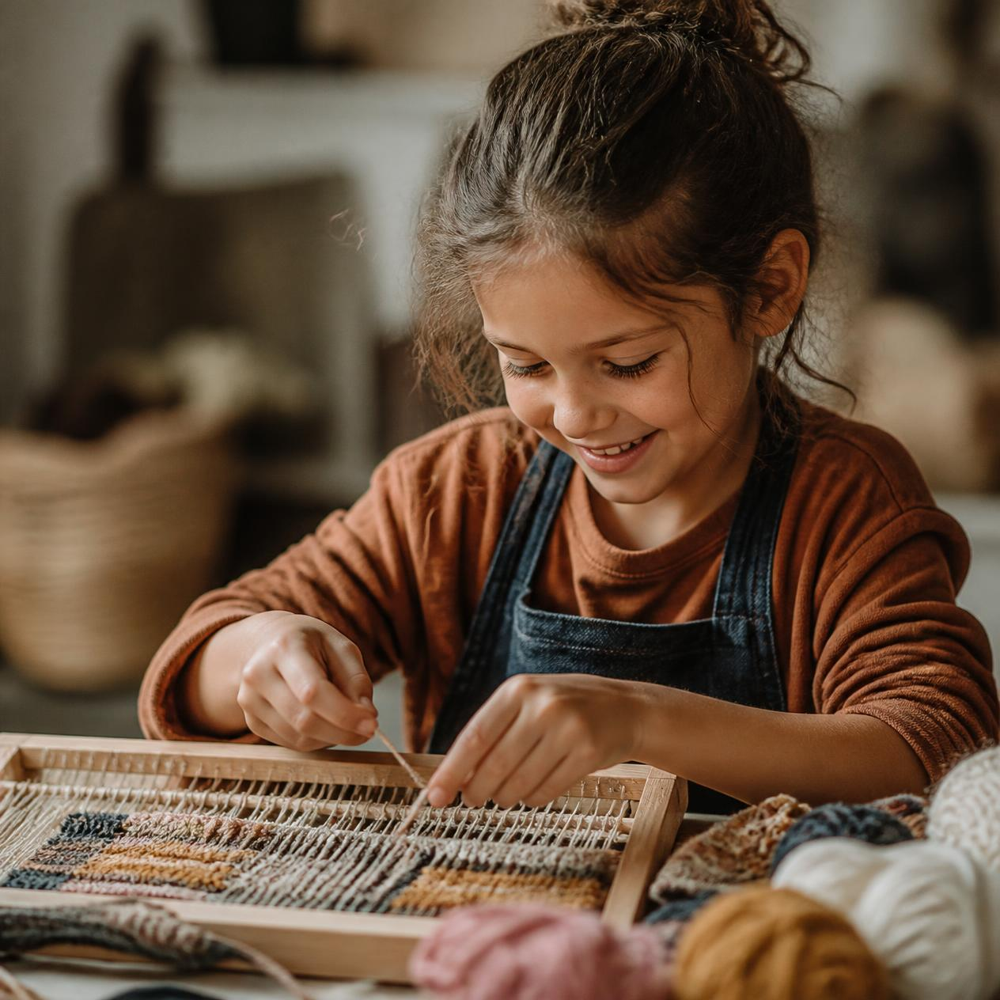
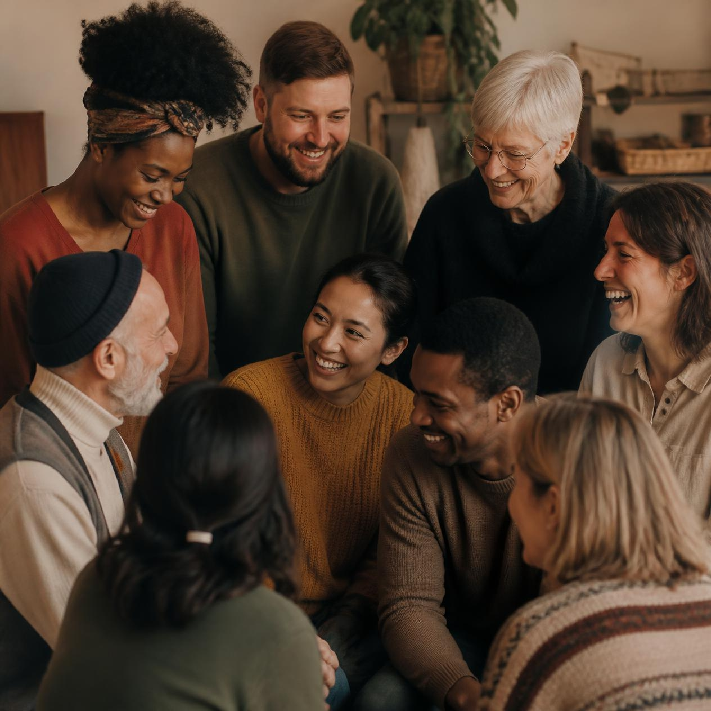

Hasta Hope Foundation runs hands-on craft workshops — from crochet to whatever comes next — and channels what's raised and made straight into charitable causes in our community.
Support Our Work See Our Initiatives





“Hasta” means hand. Every initiative we run starts there — hands learning a craft, and hands giving back. — Hasta Hope Foundation
Our flagship initiative: youth-led crochet workshops where kids learn the craft, make items by hand, and raise funds that go directly toward food security, healthcare support, and disaster relief.
Visit Crochet For Hope →We're growing beyond crochet into other handcrafts. Interested in starting or leading one? Get in touch.
Kids and volunteers join hands-on workshops to learn a handcraft from the ground up, taught by peers and mentors.
Participants make items by hand — blankets, goods, and more — building skill, patience, and pride along the way.
What's made and raised goes straight to causes like food security, healthcare, and disaster relief in our community.
Whether you volunteer, donate, or simply spread the word, you're helping a young person learn a craft and turn it into real support for people who need it.
Get Involved Explore Crochet For Hope